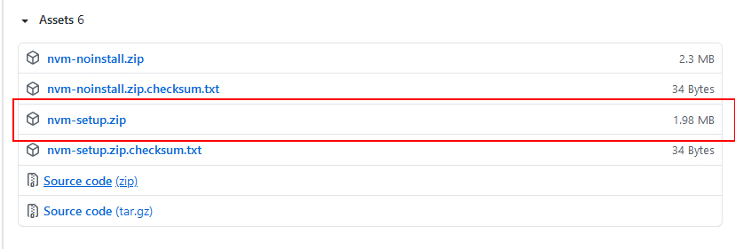
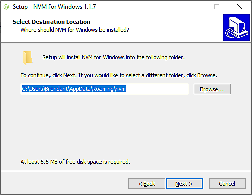

Learning Goals
At the end of this Tutorial, you will be able to:
- Install the Node Version Manager (nvm), Node.js and the Node Package Manager (npm) on your system.
- Work with package.json files.
About the Node Version Manager (nvm)
When working with projects based on Node.js, it is useful to have multiple versions installed on your system at any one time.
As the name suggests, the Node Version Manager (nvm) enables you switch between and work with different Node versions.
The nvm provides a CLI (command-line interface) where, with a single command, you can:
- Install a particular Node.js version
- Set a default Node.js version, and
- Switch between versions as required
- Safely upgrade as new versions of Node.js are released.
Installing nvm
How you install nvm depends on your operating system:
- macOS and Linux: These two systems are directly supported by nvm.
- Windows: You will need a related (but separate and independent) project called nvm-windows to work with multiple Node.js versions.
The basic nvm commands are very similar across all three operating systems.
Installing nvm on Windows
Here are the steps for installing nvm on Microsoft Windows:
- Uninstall any existing versions of Node.js or nvm.
This requires deleting any existing Node.js installation folders (such as
C:\Program Files\nodejs), and removing the existing npm install folder (such asC:\Users\<user>\AppData\Roaming\npm). - Open the windows-nvm repository in your web browser.
- Download the nvm-setup.zip file for the most recent release. 
- Open the zip file, and then run the nvm-setup.exe file.
- The Setup-NVM-for-Windows installation wizard will walk you through the setup steps, including choosing the directory where both nvm-windows and Node.js will be installed. 
nvm-windows runs in an Admin shell. So start Powershell or Command Prompt as Administrator to use nvm-windows.
Type the nvm comnand to verify the Node Version Manager has installed correctly. You should see a screen similar to that below.

Installing nvm on macOS/Linux
With macOS and Linus, removing previous Node.js and npm installations is optional.
(Here are instructions for removing removing Node.js from macOS systems and from Linux systems. To remove nvm from either environment, follow these steps.)
Before installiing, visit the project’s home page to discover the latest version number. Currenly, this is v0.38.0.
On your terminal, you can use cURL or Wget on your terminal as follows.
With cURL:
curl -o- https://raw.githubusercontent.com/creationix/nvm/v0.38.0/install.sh | bash Alternatively, with Wget:
wget -qO- https://raw.githubusercontent.com/creationix/nvm/v0.38.0/install.sh | bash Running either of the above commands downloads a script and runs it. The script clones the nvm repository to ~/.nvm and makes the required changes to your bash profile, so that nvm is available from anywhere in your terminal.
Reload (or restart) your terminal and nvm is ready for you to use.
Installing Node.js
After installing nvm, you are now ready to install Node.js. The latest 'stable' or LTS (Long-Term Support) version is 14.16.1.
Installing Node.js on Windows
Follow the steps below.
- In Powershell or the Command Prompt as Administrator, run the
nvm lscommnand to list all versions of Node.js currently installed on your system. The screen should look as follows.
- Discover the current LTS version number of Node.js by typing
nvm list available.
- Install version
14.16.1by typingnvm install 14.16.1
That's it.
To run Node.js, type this command:
nvm use 14.16.1
To verify which version of the Node Package Mananger (npm) installed, type:
npm --version
Installing Node.js on macOS
Download the macOS Installer directly from the nodejs.org web site.
If you want to download the package with bash:
curl "https://nodejs.org/dist/latest/node-${VERSION:-$(wget -qO- https://nodejs.org/dist/latest/ | sed -nE 's|.*>node-(.*)\.pkg</a>.*|\1|p')}.pkg" > "$HOME/Downloads/node-latest.pkg" && sudo installer -store -pkg "$HOME/Downloads/node-latest.pkg" -target "/"
An alternative is to use Homebrew:
brew install node
That's it.
Ensire you have Node.js and npm installed by running simple commands to see what version of each is installed:
- Test Node. To see if Node is installed, type
node -vin Terminal. This should print the version number so you’ll see something like thisv0.10.31. - Test NPM. To see if NPM is installed, type
npm -vin Terminal. This should print the version number so you’ll see something like this1.4.27

Ending Node.js
To end the program running within the console, type Ctrl + C. This unbinds Node.js from any ports it is listening on.
About Node Package Manager (npm)
npm is the world's largest software registry that currently contains over 800,000 code packages. npm includes a CLI that you can use to download and install software:
On Windows:
C:\>npm install <package>
On macOS
⋗npm install <package>
All npm packages are defined in files called package.json. Its contents must be written in JSON. At least two fields must be present in the definition file: name and version. for example:
{
"name" : "foo",
"version" : "1.2.3",
"description" : "A package for fooing things",
"main" : "foo.js",
"keywords" : ["foo", "fool", "foolish"],
"author" : "Mary Smith",
"licence" : "ISC"
}
npm can manage dependencies, which are also defined in a package.json. npm can (in one command line) install all the dependencies required by a project.
If a project has a package.json file, run the following command to install everything the project needs:
npm install
It will install everything in the node_modules folder, creating it if it's not existing already.
You can also install a specific package by running:
npm install <package-name>
Global and local installs
When you install a package using npm you can perform two types of installation:
- a local install
- a global install
By default, when you type an npm install command, like:
npm install lodashthe package is installed in the current file tree, under the node_modules subfolder.
As this happens, npm also adds the lodash entry in the dependencies property of the package.json file present in the current folder.
A global installation is performed using the -g flag:
npm install -g lodashWhen this happens, npm won't install the package under the local folder, but instead, it will use a global location. Use the npm root -g command to discover where that location is on your system.
Using a package installed with npm
When you install using npm a package into your node_modules folder, or also globally, how do you use it in your Node.js code?
Say you install lodash, the popular JavaScript utility library, using
npm install lodashThis is going to install the package in the local node_modules folder.
To use it in your code, you just need to import it into your program using require:
const _ = require('lodash')What if your package is an executable?
Publishing a package
You can publish any directory from your computer as long as it has a package.json file.
Check if npm is installed:
C:\>npm
Check if you are logged in:
C:\>npm whoami
If not, log in:
C:\>npm login
Username: <your username>
Password: <your password>
Navigate to your project and publish your project:
C:\Users\myuser>cd myproject
C:\Users\myuser\myproject>npm publish